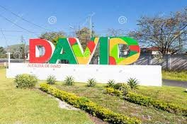
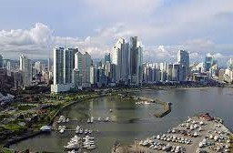

<!DOCTYPE html><html>
<meta charset="utf-8" />
<head>
<title>Rutas y Mapas con Leaflet</title>
<link rel="stylesheet" href="https://unpkg.com/leaflet@1.0.2/dist/leaflet.css" />
                <script src="https://unpkg.com/leaflet@1.0.2/dist/leaflet.js"></script>

                <script src="leaflet-routing-machine-3.2.5/dist/leaflet-routing-machine.js"></script>
<link rel="stylesheet" href="leaflet-routing-machine-3.2.5/dist/leaflet-routing-machine.css" /> 
<script src="dist/leaflet-routing-machine.js"></script>
<link rel="stylesheet" href="dist/leaflet-routing-machine.css"></script>
<script src="dist/leaflet.routing.icons.png"></script>
 <style>
  #map { 
  widh: 50px;
  height: 600px; }
 </style>
 
 </head>
  <body>
   <div id="map"></div>
 <script>
 
var map = L.map('map').
setView([8.0854964, -80.9551299], 
8);
map.scrollWheelZoom.disable();
 
const zooMarkerPopup = L.popup().setContent("<strong>David, Chiriquí</strong>" + "<br/>" + "Población: 174 097 (2022)" + "<br>" + "Elevación: -6 msnm" + '<br>' + '');
const zooMarkerPopup2 = L.popup().setContent("<strong>Ciudad de Panamá</strong>" + "<br/>" + "Población: 4 279 000 (2022)" + "<br>" + "Elevación: 2 msnm" + '<br>' + '');

L.tileLayer('http://{s}.tile.osm.org/{z}/{x}/{y}.png', {
	attribution: '&copy; <a href="http://osm.org/copyright">OpenStreetMap</a> contributors'
}).addTo(map);

var greenIcon = new L.Icon({
  iconUrl: 'https://cdn.rawgit.com/pointhi/leaflet-color-markers/master/img/marker-icon-2x-green.png',
  shadowUrl: 'https://cdnjs.cloudflare.com/ajax/libs/leaflet/1.3.4/images/marker-shadow.png',
  iconSize: [25, 41],
  iconAnchor: [12, 41],
  popupAnchor: [1, -34],
  shadowSize: [41, 41]
});

var control = 
L.Routing.control({
	waypoints: [
		L.latLng(8.4528, -82.4293),
		L.latLng(8.9715, -79.5342)
	],
    routeWhileDragging: true,
    reverseWaypoints: true,
    showAlternatives: true,
    altLineOptions: {
        styles: [
            {color: 'black', opacity: 0.15, weight: 9},
            {color: 'white', opacity: 0.8, weight: 6},
            {color: 'blue', opacity: 0.5, weight: 2}
        ]
    },
    createMarker: function(i, wp, nWps) {
    
    if (i === 0) {
      // here change the starting and ending icons
      return L.marker(wp.latLng, {
        icon: greenIcon // here pass the custom marker icon instance
      }).bindPopup(zooMarkerPopup);
    } else {
      // here change all the others
      return L.marker(wp.latLng, {
        icon: greenIcon
      }).bindPopup(zooMarkerPopup2);
    }
  }
}).addTo(map);

L.Routing.errorControl(control).addTo(map);

L.Routing.Formatter = L.Class.extend({
	options: {
		language: 'sp'
	}
});


 </script>
 </body> 
 </html>


